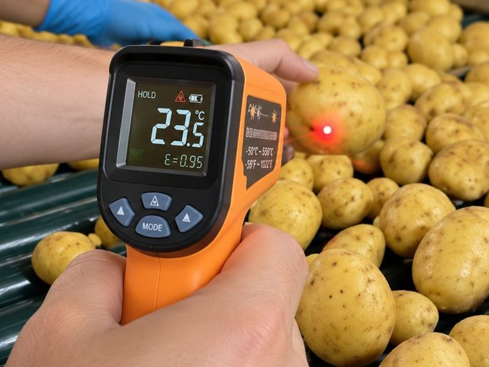

Modelo de artigo — texto de exemplo
Na secagem de frutas e legumes, a capacidade produtiva de um sistema a gás e de um sistema por infravermelho é equivalente. O que separa os dois é a forma como o calor chega ao produto — e tudo o que vem junto com essa escolha: energia, segurança da equipe e qualidade do que vai para a prateleira.
Como funciona a secagem a gás
O secador convencional trabalha por convecção: um queimador a gás ou diesel aquece o ar, e é o ar quente que circula entre os produtos. O fluido de calor é o próprio vento.
Isso tem três consequências diretas: há queima de combustível (e emissão de CO₂), a fruta é aquecida junto com o ar do ambiente, e a uniformidade da secagem passa a depender de como esse ar circula pela linha.
Como funciona a secagem por infravermelho
No infravermelho, o calor viaja por ondas eletromagnéticas e não precisa de um meio para ser conduzido. A energia chega direto à superfície do produto, sem aquecer o ar — e sem queimador.
Na convecção, o fluido de calor é o vento. No infravermelho, são ondas eletromagnéticas — e é daí que vêm todas as outras diferenças.
Lado a lado
| Critério | Gás ou diesel | Infravermelho |
|---|---|---|
| Transferência de calor | Convecção (ar quente) | Ondas eletromagnéticas |
| Emissão de CO₂ | Gerada pela queima | Nenhuma no processo |
| Aquecimento do produto | Aquecido junto com o ar | Não é aquecido |
| Capacidade produtiva | Referência | Equivalente |
O que muda para o produto
Como o produto não é aquecido, ele mantém por mais tempo as características de quando entrou na linha. Na prática, isso significa:
- Mais shelf life — mais tempo de prateleira ao longo da cadeia;
- Sabor, cor e nutrientes preservados;
- Temperatura uniforme, sem pontos úmidos e com acabamento de qualidade.

O que muda para a operação
Sem queimador, o processo deixa de depender de combustível. O sistema pode ser projetado para energia solar, e a operação ganha em segurança: o processo não é inflamável e a equipe não tem contato com o calor.
Há ainda um efeito indireto: ao eliminar a queima de combustível, a operação pode dar direito ao resgate de créditos de carbono — uma possibilidade que depende da avaliação de cada caso.
Avalie o AX Infra para a sua linha
O sistema de secagem por infravermelho da Ax Pack, com patente requerida no INPI.
Quando faz sentido trocar
Como a capacidade é equivalente, a troca não exige reduzir o volume da linha. A decisão passa por três pontos da operação: a cultura processada, o volume e o espaço disponível. É com esses dados que a engenharia dimensiona o sistema.